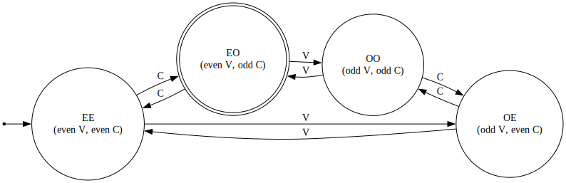

Correction de l'Examen de Septembre 2025
Dernière mise à jour : 25/08/2025 (Alix Decrop)
Table des Matières
- Langages Formels
- Analyse Syntaxique
- Grammaires Attribuées
- Sémantique Opérationnelle
Pour chacun des langages suivants sur l'alphabet { a, b, c }, dites s'il est régulier et s'il est hors-contexte. Prouvez votre réponse. Chaque langage est suivi par quelques exemples.
Les mots contenant un nombre pair de chaque voyelle, impair de chaque consonne présente : ε, baac, aca, ...
Le langage n'est pas fini, car il n'y a pas de borne supérieure quand au nombre de voyelles et de consonnes.
Le langage est régulier, car on peut le représenter par un automate fini. Pour des raisons de simplicité, considérons une voyelle V et une consonne C. Il est possible de représenter un automate fini qui génère des mots avec un nombre pair de V et un nombre impair de C :

Le langage est également hors-contexte, car il est régulier.
Les mots anan, constitués de n a puis de nouveau n a : ε, aa, aaaa, ...
Le langage n'est pas fini, car il n'y a pas de borne supérieure quant au nombre de a.
Le langage est régulier, car on peut trouver l'expression régulière suivante : (aa)*. L'énoncé semble supposer que les n a sont différents de part et d'autre, mais vu que c'est le même symbole, une expression régulière convient très bien. Si par contre le langage était anbn, il ne serait pas régulier.
Les mots contenant autant de voyelles que de consonnes : ε, ab, baac, ...
Le langage n'est pas fini, car il peut y avoir une infinité de voyelles et de consonnes dans un mot.
Le langage n'est pas régulier, et on peut le prouver en utilisant la contraposée du lemme de pompage pour les langages réguliers (à faire lors de l'examen).
Le langage est hors-contexte, car on peut trouver la grammaire hors-contexte suivante :
S -> SS | aSb | aSc | bSa | cSa | ε
Le même mot répété ww : ε, bacbac, caabcaab, ...
Le langage n'est pas fini, car il n'y a pas de borne supérieure sur la longueur du mot à répéter.
Le langage n'est pas régulier, et on peut le prouver en utilisant la contraposée du lemme de pompage pour les langages réguliers (à faire lors de l'examen).
Le langage n'est pas hors-contexte, et on peut le prouver en utilisant la contraposée du lemme de pompage pour les langages hors-contexte (à faire lors de l'examen).
Les non-palindromes : baba, bacb, abcbba, ...
Le langage n'est pas fini, car il n'y a pas de borne supérieure sur la longueur d'un mot non-palindrome.
Le langage n'est pas régulier, et on peut le prouver en utilisant la contraposée du lemme de pompage pour les langages réguliers (à faire lors de l'examen).
Le langage est hors-contexte, car on peut trouver la grammaire hors-contexte suivante :
S -> aXb | bXa | aXc | cXa | bXc | cXb | aSa | bSb | cSc
X -> aX | bX | cX | ε
Il est important de noter qu'un mot non-palindrome peut avoir une forme palindrome de part et d'autre, mais à un endroit dans le mot cette forme doit être "cassée".
Analyse Syntaxique
Text
Grammaires Attribuées
Attribuez la grammaire ci-dessus pour y ajouter un attribut booléen qui détermine si le légume de la soupe est le même que celui qui accompagne la viande.
Nous allons utiliser les attributs suivants :
sameVeggie : boolean, indiquant si le légume est le même.veggie : string, contenant la chaine de caractères du légume.
On peut à présent définir les règles d'attribution dans la grammaire :
S.sameVeggie = (E.veggie == P.veggie) pour S -> EPD
E.veggie = L.veggie pour E -> entrée : soupe de L
P.veggie = L.veggie pour P -> plat : V aux L
L.veggie = "poireaux" pour L -> poireaux
L.veggie = "carottes" pour L -> carottes
L.veggie = "courgettes" pour L -> courgettes
Sémantique Opérationnelle
Text
© 2025 Alix Decrop. Le contenu de cette page est mis à disposition selon les termes de la license Creative Commons Attribution - CC BY-NC-ND 4.0. En gros, vous êtes libres de copier/redistribuer le contenu de cette page, sans utilisation commerciale ni modifications.